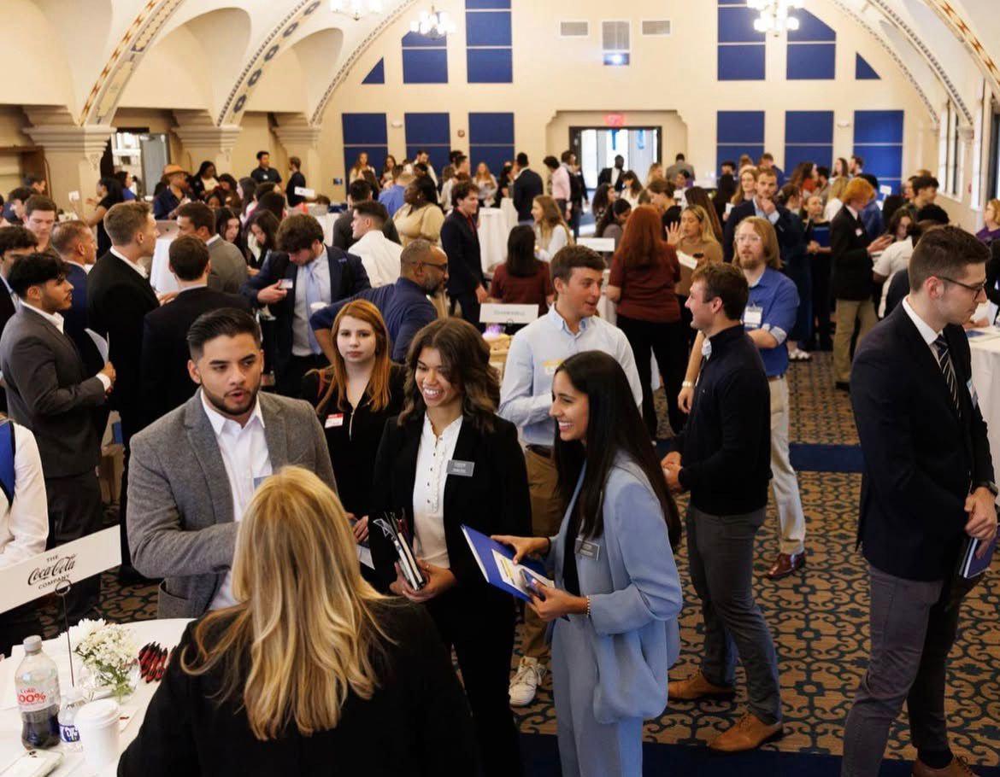
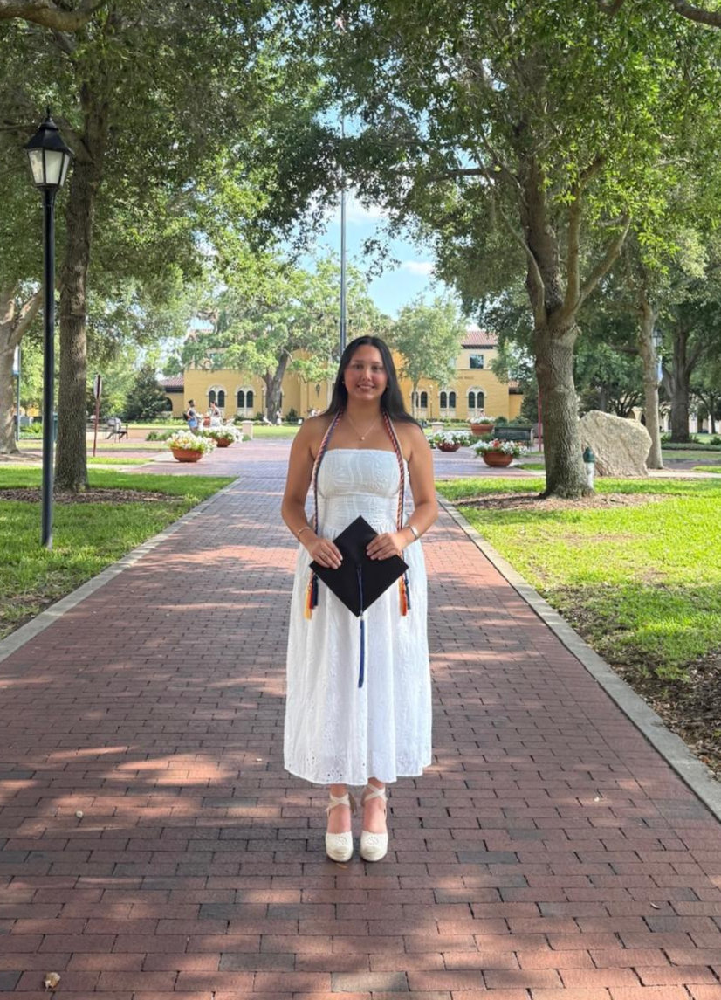

Maria Montoya-Chang
Digital Portfolio
MS in Data Analytics (AI Track)University of Central Florida ’28
BA in International Business, Economics & Data Analytics MinorRollins College ’26

01 · Marketing & Creative
Marketing & Creative Work
Graphic design and visual media projects, ranging from nonprofit campaigns to social media content.

Nonprofit · graphic design
Ronald McDonald House
Supported operations for a nonprofit serving families with hospitalized children, designing promotional flyers and materials for fundraising and community outreach events.

London · fundraising & social
Abbey Community Centre
Contributed to fundraising at a London community centre through grant proposal writing and digital outreach materials, while managing donor communications and social media.
02 · Data Analytics
Data Analytics Projects
Three projects in Python and R. Each notebook, dataset and write-up is on GitHub.
R
Predicting Online Purchases from Website Session Data
Only about 15% of visits to an online store end in a purchase. I used 12,330 real browsing sessions to predict which ones, comparing logistic regression, a decision tree and a random forest.
0.932AUC, random forest on unseen data
12,330sessions analyzed
6of 17 predictors keep 99% of the performance
- Page value was the top predictor in every model.
- Purchase rate climbs from about 2% in February to about 25% in November.
- New visitors convert more (25%) than returning ones (14%).

Python
Real Madrid in La Liga, 2015–2026: What Wins Matches?
Eleven La Liga seasons, 2015 to 2026: performance trends, home advantage, the in-game stats that separate wins from everything else, and whether bookmakers price the team correctly.
418matches across 11 seasons
75%home win rate vs 60% away
9of 11 seasons beating market expectations
- Each extra shot on target vs the opponent multiplies the odds of winning by 1.41.
- Playing at home multiplies the odds by 2.5, even after controlling for shots.
- Match by match, the bookmaker still beat my simple form model (AUC 0.694 vs 0.652).

Python
How Does the Federal Reserve Set Interest Rates?
A time-series look at the federal funds rate, inflation and unemployment since 1960: testing the Taylor rule, how the Fed’s response to inflation changed by era, and the 2022–23 hiking cycle in context.
801months of official data
12hiking cycles compared
+5.13points in 17 months, 2022–23
- Before 1979, a 1-point rise in inflation raised rates by only 0.78 points, so real rates fell.
- From 1987 to 2007 the response rose to 1.35, in line with the Taylor principle.
- The Taylor rule fits the Greenspan era best and recent years worst.

03 · Contact
Hi, I’m Maria!
Thank you for your interest in my work. Here you’ll find a selection of my graphic design and visual media projects, ranging from nonprofit campaigns to social media content, along with my data analytics projects.
Please feel free to explore, especially the Rollins College section, which is my personal favorite. There, you’ll find Instagram Reels that I planned, shot, and edited, along with photography captured on a Canon EOS R50.